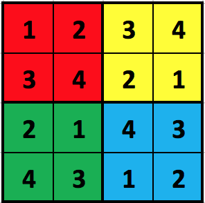
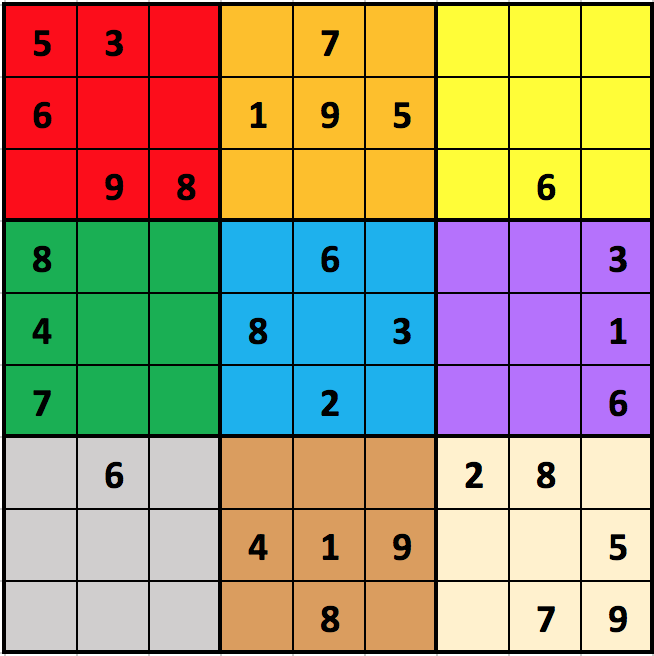

isLegalSudoku(board) [75 pts]
This problem involves the game Sudoku, though we will generalize it to the
N2xN2 case, where N is a positive integer (and not just the 32x32 case which is most commonly played). First, read the top part (up to History) of
the Wikipedia page on Sudoku
so we can agree on the rules. As for terminology, we will refer to each of the
N2 different N-by-N sub-regions as "blocks". The following figure shows each of the 4 blocks in a 22x22 completed puzzle highlighted in a different color:

While the next example shows the blocks of a 32x32 incomplete puzzle:

For our purposes, we will number the blocks from 0 to N2-1 (hence, 0 to 8 in the figure), with block 0 in the top-left (red), moving across and then down (so, in the figure, block 1 is orange, block 2 is yellow, block 3 is green, block 4 is blue, block 5 is purple, block 6 is gray, block 7 is brown, and block 8 is tan). We will refer to the top row as row 0, the bottom row as row (N2-1), the left column as column 0, and the right column as column (N2-1).
A Sudoku is in a legal state if all N4 cells are either blank (0) or contain a single integer from 1 to N2 (inclusive), and if each integer from 1 to
N2 occurs at most once in each row, each column, and each block. A Sudoku is solved if it is in a legal state and contains no blanks.
We will represent a Sudoku board as an N2xN2 2d list of integers, where 0 indicates that a given cell is blank. For example, here is how we would represent the 32x32 Sudoku board in the figure above:
[
[ 5, 3, 0, 0, 7, 0, 0, 0, 0 ],
[ 6, 0, 0, 1, 9, 5, 0, 0, 0 ],
[ 0, 9, 8, 0, 0, 0, 0, 6, 0 ],
[ 8, 0, 0, 0, 6, 0, 0, 0, 3 ],
[ 4, 0, 0, 8, 0, 3, 0, 0, 1 ],
[ 7, 0, 0, 0, 2, 0, 0, 0, 6 ],
[ 0, 6, 0, 0, 0, 0, 2, 8, 0 ],
[ 0, 0, 0, 4, 1, 9, 0, 0, 5 ],
[ 0, 0, 0, 0, 8, 0, 0, 7, 9 ]
]
With this description in mind, your task is to write some functions to indicate if a given Sudoku board is legal. To make this problem more approachable, we are providing a specific design for you to follow. And to make the problem more gradeable, we are requiring that you follow the design! So you should solve the problem by writing the following functions in the order given:
- areLegalValues(values) [15 pts]
This function takes a 1d list of values, which you should verify is of length N2 for some positive integer N and contains only integers in the range 0 to N2 (inclusive). These values may be extracted from any given row, column, or block in a Sudoku board (and, in fact, that is exactly what the next few functions will do -- they will each call this helper function). The function returns True if the values are legal: that is, if every value is an integer between 0 and N2, inclusive, and if each integer from 1 to N2 occurs at most once in the given list (0 may be repeated, of course). Note that this function does not take a 2d Sudoku board, but only a 1d list of values that presumably have been extracted from some Sudoku board. Also, note that this function must be non-destructive.
- isLegalRow(board, row) [15 pts]
This function takes a Sudoku board and a row number. The function returns True if the given row in the given board is legal (where row 0 is the top row and row (N2-1) is the bottom row), and False otherwise. To do this, your function must create a 1d list of length N2 holding the values from the given row, and then provide these values to the areLegalValues function you previously wrote. (Actually, because areLegalValues is non-destructive, you do not have to copy the row; you may use an alias.)
- isLegalCol(board, col) [15 pts]
This function works just like the isLegalRow function, only for columns, where column 0 is the leftmost column and column (N2-1) is the rightmost column. Similarly to isLegalRow, this function must create a 1d list of length N2 holding the values from the given column, and then provide these values to the areLegalValues function you previously wrote.
- isLegalBlock(board, block) [15 pts]
This function works just like the isLegalRow function, only for blocks, where block 0 is the left-top block, and block numbers proceed across and then down, as described earlier. Similarly to isLegalRow and isLegalCol, this function must create a 1d list of length N2 holding the values from the given block, and then provide these values to the areLegalValues function you previously wrote.
- isLegalSudoku(board) [15 pts]
This function takes a Sudoku board (which you may assume is a N2xN2 2d list of integers), and returns True if the board is legal, as described above. To do this, your function must call isLegalRow over every row, isLegalCol over every column, and isLegalBlock over every block. See how helpful those helper functions are?
isKingsTour(board) [25 pts]
Background: in Chess, a King can move from any square to any adjacent square in any of the 8 possible directions. A King's Tour is a series of legal King moves so that every square is visited exactly once. We can represent a Kings Tour in a 2D list where the numbers represent the order the squares are visited, going from 1 to N2. For example, consider these 2D lists:
[ [ 3, 2, 1 ], [ [ 1, 2, 3 ], [ [ 3, 2, 1 ],
[ 6, 4, 9 ], [ 7, 4, 8 ], [ 6, 4, 0 ],
[ 5, 7, 8 ] ] [ 6, 5, 9 ] ] [ 5, 7, 8 ] ]
The first is a legal Kings Tour but the second is not, because there is no way to legally move from the 7 to the 8, and the third is not, because it contains a 0 which is out of range. Also, this should work not just for 3x3 boards but for
any NxN board. For example, here is a legal Kings Tour in a 4x4 board:
[ [ 1, 14, 15, 16],
[ 13, 2, 7, 6],
[ 12, 8, 3, 5],
[ 11, 10, 9, 4]
]
With this in mind, write the function isKingsTour(board) that takes a 2D list of integers, which you may assume is NxN for some N>0, and returns True if it represents a legal Kings Tour and False otherwise.